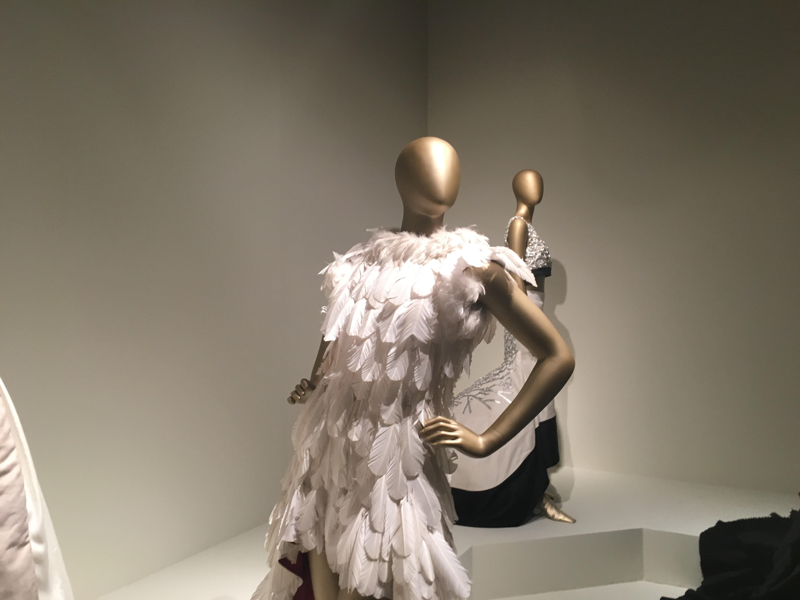

Fashion has always been something part of my life. It often follows me everywhere I go. I believe it helps people express how they feel but without saying a word. It is a way you can present yourself and experiment with new looks everyday.
Below I have shared a fashion clip. That I took when I was in NYC during a small fashion.